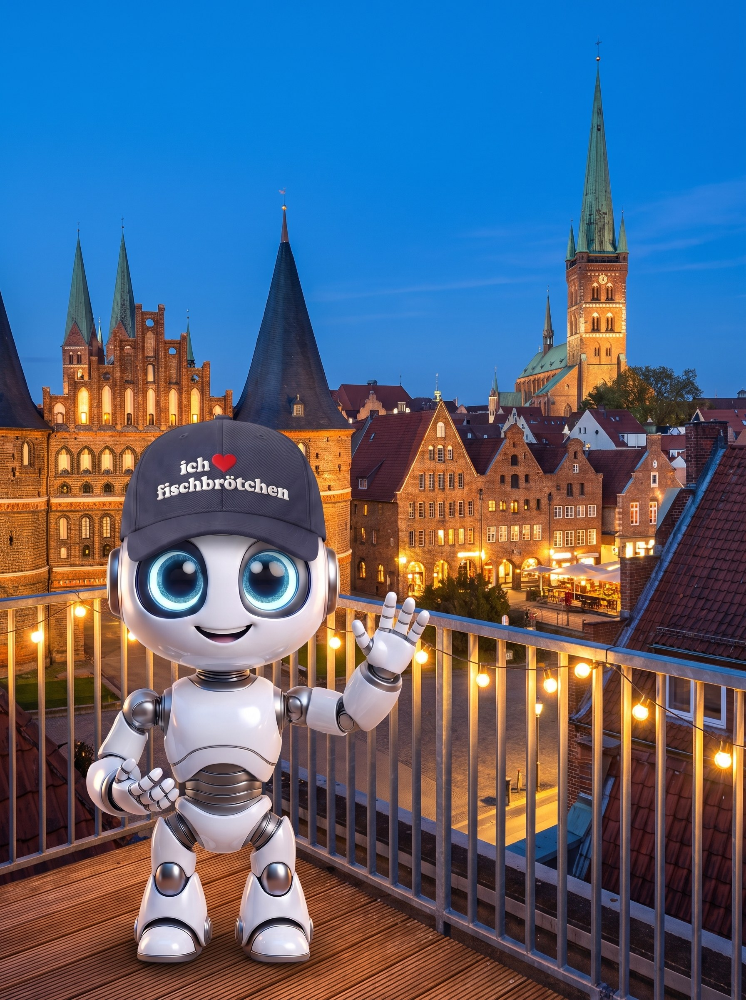

Bild mit KI erstellt
Den Überblick
 ×
×

Lübeck.lokal · 9. September 2026 · Atlantic Hotel
Den Überblick
behalten.
KI-Impulse über den Dächern von Lübeck.
Lübeck.lokal · 9. September 2026 · Atlantic Hotel
KI-Impulse über den Dächern von Lübeck.


KI aus Lübeck.
Für Deutschland.


Wo anfangen?

Jetzt live
Der Assistent
Ins Handy gesagt, nicht getippt
Ein Foto, drei Schritte · Schritt 1
Der Bildermacher


Klein in der Ecke: das Foto, mit dem wir angefangen haben.
Ein Foto, drei Schritte · Schritt 2
Der Bildermacher

Ein Foto, drei Schritte · Schritt 3
Der Bildermacher

Und wer so ein Bild veröffentlicht, schreibt dazu, dass es KI ist.
Das Gedächtnis

Der Ordner
aus Kopenhagen

ueberblick.edge-digital.ai
Lübeck liegt an der Ostsee.
Heute ausnahmsweise am Atlantic.
EDGE Digital · Fischstraße 16 · 23552 Lübeck
